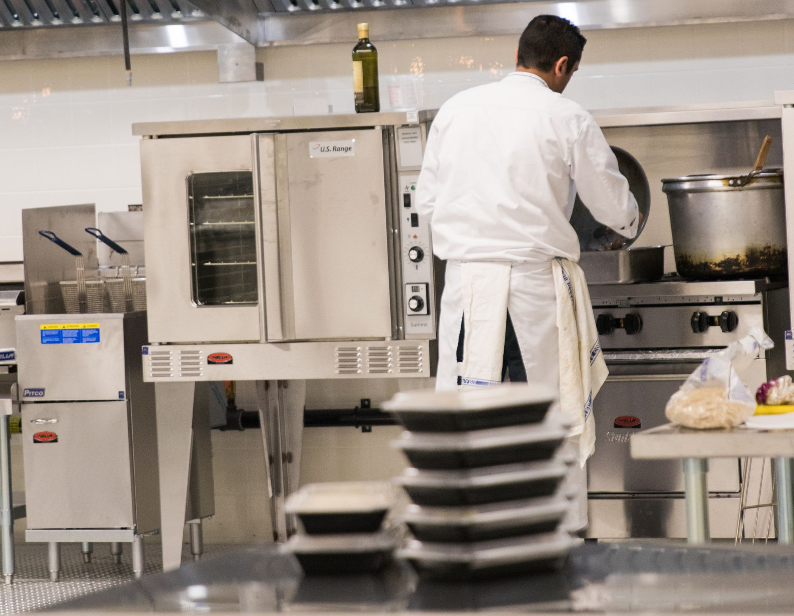
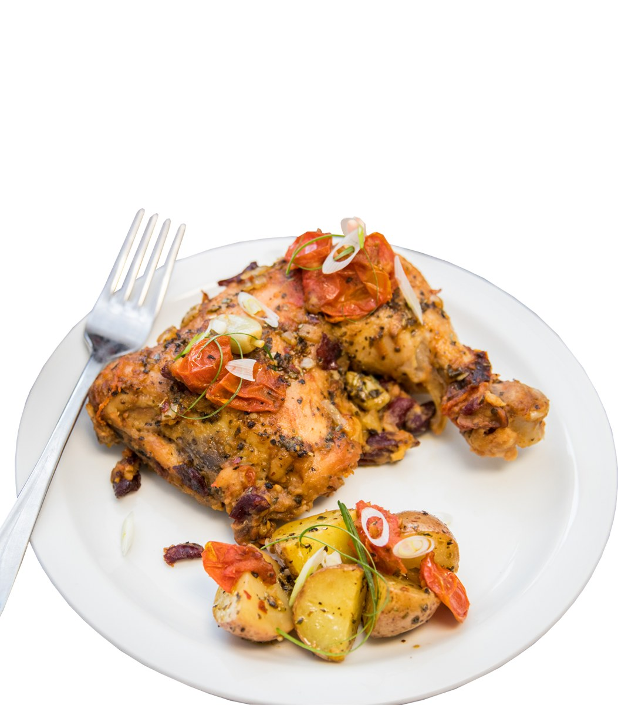
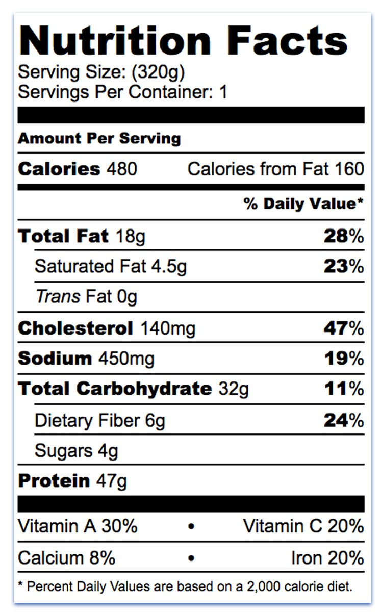

Nutrics connects your kitchen with health-conscious customers looking for personalized meal plans. You prepare the meals. We handle everything else.
We're building this program with a small group of Founding Kitchen Partners. What's below reflects where we are today — pricing, production model and packaging will be shaped together with the kitchens who join early.
We're not another delivery app bidding for your attention. We bring demand your kitchen can actually plan around.
Know your volume days in advance instead of guessing at walk-in demand.
Produce in runs, not one ticket at a time — built around how kitchens actually work.
We acquire and retain the customers. You never have to run an ad or manage a listing.
Fill quiet prep hours and off-peak capacity with orders that are already confirmed.
Nutrics customers subscribe weekly, so your kitchen isn't starting from zero every week.
Every meal is co-branded — your kitchen's name reaches customers who've never heard of you.
We believe great kitchens deserve recognition. Every meal proudly displays your kitchen's name alongside Nutrics — customers know exactly who prepared their food. That builds trust for them, and builds your reputation with every order.


Seven steps, most of which you'll never have to think about. Your part starts at step three.
You keep cooking the dish you already make. Nutrics supplies standardized ingredient weights and nutrition targets, so the same recipe scales into several macro-matched portion profiles — easier production, consistent quality, and a menu that works across every customer goal.
| portion | kcal | P | C | F |
|---|---|---|---|---|
| normal | 480 | 47 | 32 | 18 |
| high-protein | 545 | 62 | 28 | 17 |
| low-fat | 430 | 48 | 34 | 9 |
| high-carb | 525 | 42 | 58 | 14 |
Everything outside the kitchen door is on us.
We're picky about who we put the Nutrics name behind — it protects you as much as it protects us.
Nutrics pays your kitchen on a regular weekly schedule based on completed production, at the wholesale price you agree to. Payment terms are one of the things we're finalizing with our founding partners — we'll walk through exact cadence and method on your onboarding call.
Yes. Your recipes stay yours. Nutrics works with you to standardize ingredient weights and portions so a dish you already make can hit specific macro targets — we're not asking you to hand over your recipe book.
It depends on your capacity, cuisine and location, and we're still learning this ourselves as we onboard founding partners. We'll size expectations with you honestly before you commit to anything.
No. Nutrics nutritionists calculate the macros and set the standards — your kitchen focuses on cooking to the portions and specs we provide.
For many kitchens, yes — one large weekly batch is one of the production models we support. Tell us your preference in the application and we'll design around it.
Nutrics owns the customer relationship — subscriptions, support, billing and delivery. Your kitchen owns the food and the brand recognition that comes with every meal you prepare.
Yes — kitchens can pause for holidays, renovations or capacity limits with reasonable notice. We'll confirm exact notice periods as part of onboarding.
Short, structured, and it goes straight to our team. This helps us figure out — together — how a partnership with your kitchen could work.
Let's build healthier communities together.
Become a Partner